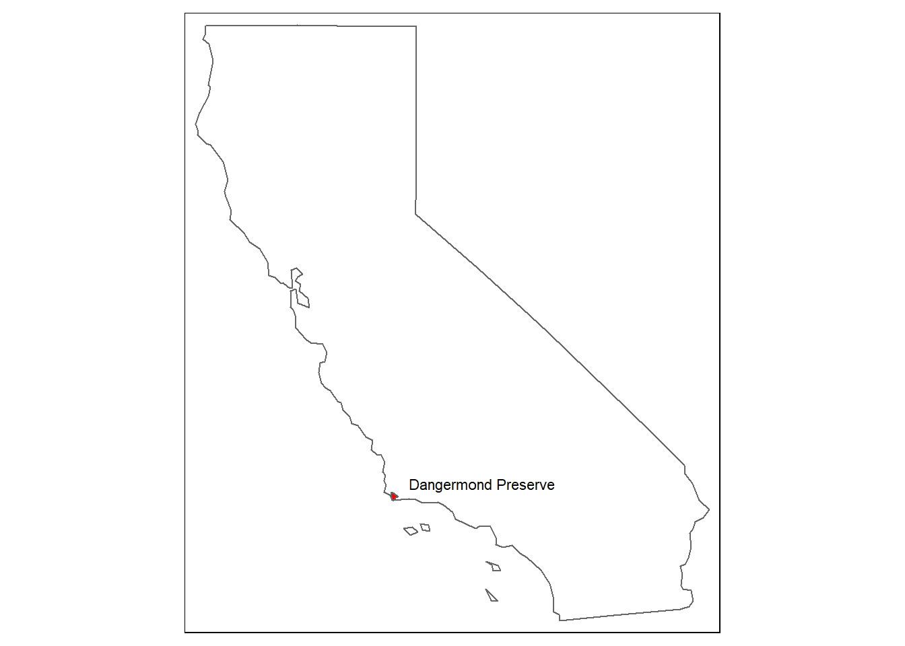
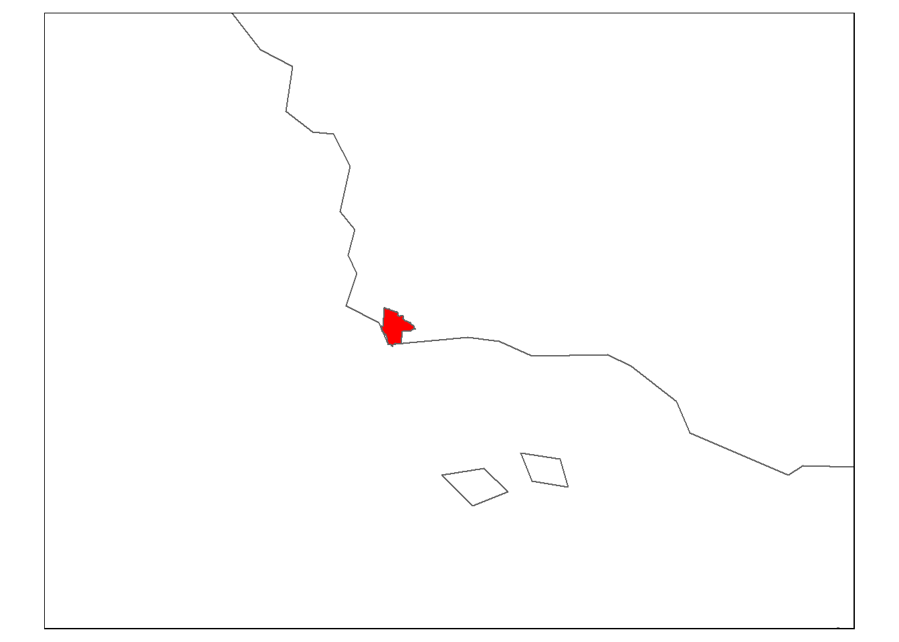

Initial MARINe species data cleaning and exploration
Author
Jordan Sibley
Published
January 17, 2025
Set Up
# Load packages library(tidyverse)
Warning: package 'tidyverse' was built under R version 4.4.2
── Attaching core tidyverse packages ──────────────────────── tidyverse 2.0.0 ──
✔ dplyr 1.1.4 ✔ readr 2.1.5
✔ forcats 1.0.0 ✔ stringr 1.5.1
✔ ggplot2 3.5.1 ✔ tibble 3.2.1
✔ lubridate 1.9.3 ✔ tidyr 1.3.1
✔ purrr 1.0.2
── Conflicts ────────────────────────────────────────── tidyverse_conflicts() ──
✖ dplyr::filter() masks stats::filter()
✖ dplyr::lag() masks stats::lag()
ℹ Use the conflicted package (<http://conflicted.r-lib.org/>) to force all conflicts to become errors
library(here)
here() starts at D:/MEDS/capstone/coastal-conservation
library(readxl)library(spData)library(sf)
Linking to GEOS 3.12.1, GDAL 3.8.4, PROJ 9.3.1; sf_use_s2() is TRUE
library(tmap)
Breaking News: tmap 3.x is retiring. Please test v4, e.g. with
remotes::install_github('r-tmap/tmap')
Data
# Read in three excel files from MARINe biodiversity data point_contact_raw <-read_excel(here('data', 'MARINe_biodiversity_data','cbs_data_CA_2023.xlsx'), sheet ='point_contact_summary_data')quadrat_raw <-read_excel(here('data', 'MARINe_biodiversity_data','cbs_data_CA_2023.xlsx'), sheet ='quadrat_summary_data')swath_raw <-read_excel(here('data', 'MARINe_biodiversity_data','cbs_data_CA_2023.xlsx'), sheet ='swath_summary_data')# Read in Dangermond preserve shape file dangermond <-read_sf(here('data', 'dangermond_shapefile', 'jldp_boundary.shp'))# Read in California state boundary california <- spData::us_states %>%filter(NAME =="California")
Data Cleaning Plan
Notes on what Erica coded:
Read in point_contact_summary_data, quadrat_summary_data, and swath_summary_data from the excel file under MARINe_biodiversity_data folder.
Remove species lumps that aren’t of focus
Filter to Mainland to exclude the islands
Create present or absent category of total_counts column (> 0 is now 1)
Join 3 data frames into 1
Group by marine_site_name, latitude, longitude, and species_lump and then convert total_counts to be 1 (if sum is greater than one)
Create data collection source (point contact, quadrat, swath)
Filter to Mainland
Remove species lumps that aren’t of focus
Join the three datasets together
While Erica did not separate by year, I feel it would be valuable to separate the lat long and species by the year so that you can see the species range of the year.
Data Cleaning
# Clean point_contact dataset point_contact_clean <- point_contact_raw %>%# Remove non-matching columns select(!c('number_of_transect_locations', 'percent_cover')) %>%# Rename num of hits to total count rename(total_count = number_of_hits) %>%# Create new data collection source column mutate(collection_source ="point contact") %>%# Filter to mainland only filter(island =="Mainland") %>%# Remove certain species lumps filter(!species_lump %in%c("Rock", "Sand", "Tar", "Blue Green Algae", "Red Crust", "Diatom", "Ceramiales"))# Clean quadrat dataset quadrat_clean <- quadrat_raw %>%# Remove non-matching columns select(!c('number_of_quadrats_sampled', 'total_area_sampled_m2', 'density_per_m2')) %>%# Create new data collection source column mutate(collection_source ="quadrat") %>%# Filter to mainland only filter(island =="Mainland") %>%# Remove certain species lumps filter(!species_lump %in%c("Rock", "Sand", "Tar", "Blue Green Algae", "Red Crust", "Diatom", "Ceramiales"))# Clean swath dataset swath_clean <- swath_raw %>%# Remove non-matching columns select(!c('number_of_transects_sampled', 'est_swath_area_searched_m2', 'density_per_m2')) %>%# Create new data collection source column mutate(collection_source ="swath") %>%# Filter to mainland only filter(island =="Mainland") %>%# Remove certain species lumps filter(!species_lump %in%c("Rock", "Sand", "Tar", "Blue Green Algae", "Red Crust", "Diatom", "Ceramiales"))
Merge datasets
Since all three datasets have the same columns, I will merge the datasets into one using the dpylr function bind_rows
# Merge the 3 dataset together biodiv_merge <-bind_rows(point_contact_clean, quadrat_clean, swath_clean)
Group by site, species, (and year?)
# Group by site species and year # biodiv_grouped <- biodiv_merge %>% # group_by(marine_site_name, latitude, longitude, species_lump, year) %>% # summarise(num_count = sum(total_count))
This leaves a total of 101,577 rows (from an orginal 102,522 rows)
From 2000 to 2023
I could consider combining my year blocks (every 5 years?)
Just to see, lets group by and not include year, that way we get the total range from the year 2000 to 2023
# Group by site and species (no year)biodiv_total <- biodiv_merge %>%group_by(marine_site_name, latitude, longitude, species_lump) %>%summarise(num_count =sum(total_count))
`summarise()` has grouped output by 'marine_site_name', 'latitude',
'longitude'. You can override using the `.groups` argument.
Rows = 39,413
For the data exploration, I will use this data since there are less rows.
# Create north and south threshold 0.5 degrees around Point Conception north_bound <-34.4south_bound <-34.9# Confirm that these are the correct lats for the buffer with Erica
Need to figure out way to determine which species have a range edge in the preserve.
Southern Range Edge: Present below the south bound, present within the preserve, and absent above the north bound.
Northern Range Edge: Present above the north bound, present within the preserve, and absent below the south bound.
Continuous Presence: Present within the preserve, below the south bound, and above the north bound.
# Classify species by range edge categoryrange_edge_categories <- biodiv_total %>%group_by(species_lump) %>%summarize(present_below_south =any(latitude < south_bound & presence==1),present_within_buffer =any(latitude >= north_bound & presence==1) &any(latitude >= south_bound & presence ==1),present_above_north =any(latitude > north_bound & presence==1) ) %>%mutate(range_edge_category =case_when(!present_above_north & present_within_buffer & present_below_south ~"Southern Species Range Edge", present_above_north & present_within_buffer &!present_below_south ~"Northern Species Range Edge", present_above_north & present_within_buffer & present_below_south ~"Continuous Presence", present_above_north &!present_within_buffer & present_below_south ~"Avoidant Presence",!present_above_north &!present_within_buffer & present_below_south ~"Southern Only Presence", present_above_north &!present_within_buffer &!present_below_south ~"Northern Only Presence",!present_above_north & present_within_buffer &!present_below_south ~"Dangermond Endemic Presence",TRUE~"Absent Species" ) )
Currently, all of the results are Other. Need to trouble shoot to figure out what could be wrong. A smart way to do this could be to filter to only 2 or 3 species, look up their known ranges and examine the latitudes they are sampled at. Retry this range classification and determine what went wrong.
Map of California with Dangermond Preserve
Goal for this visualization is to create a map of California with the preserve highlighted. Could be used to visualize the species ranges.
# Convert to WGS84 to lat longcalifornia <-st_transform(california, crs =4326)dangermond <-st_transform(dangermond, crs =4326)# check that the coordinate reference systems match if(st_crs(california) ==st_crs(dangermond)) {print("The coordinate reference systems match")} else {print("The coordinate reference systems do NOT match. Transformation of CRS is recommended.")}
[1] "The coordinate reference systems match"
# Map of California with preserve highlighted tm_shape(california) +tm_borders() +tm_shape(dangermond) +tm_polygons(col ='red') +tm_credits("Dangermond Preserve", position =c(0.41, 0.22),size =0.7)

# save this one
What can be helpful:
Create bounding box that is more closely focused on the preserve
Pick a few species to map their presence (remove presence = 0)
Check if I need to turn the lat long columns into a geometry column
# Create bounding box for closer to preserve bbox_sb <-st_bbox(c(xmin =-121.835697,xmax =-118.597476,ymax =35.544274,ymin =33.514814))# Map with SB bounding box tm_shape(california, bbox = bbox_sb) +tm_borders() +tm_shape(dangermond) +tm_polygons(col ='red')

Convert biodiv data to sf object
biodiv_geo <- biodiv_total %>%st_as_sf(coords =c("longitude", "latitude"), crs =st_crs(dangermond), remove =FALSE)# Check that the crs matches if(st_crs(california) ==st_crs(biodiv_geo)) {print("The coordinate reference systems match")} else {print("The coordinate reference systems do NOT match. Transformation of CRS is recommended.")}
[1] "The coordinate reference systems match"
# Convert to WGS84 #biodiv_geo <- st_transform(biodiv_geo, crs = 4326)
California mussel
# Filter to cal mussel species to potentially use (for some reason it keeps getting wrong latitudes, might not use)mussel_present <- biodiv_geo %>%filter(species_lump =="Mytilus californianus") %>%filter(presence ==1)mussel_absent <- biodiv_geo %>%filter(species_lump =="Mytilus californianus") %>%filter(presence ==0)
Absent Species
# Filter to cal mussel species to potentially use (for some reason it keeps getting wrong latitudes, might not use)crab_present <- biodiv_geo %>%filter(species_lump =="Pugettia foliata") %>%filter(presence ==1)crab_absent <- biodiv_geo %>%filter(species_lump =="Pugettia foliata") %>%filter(presence ==0)